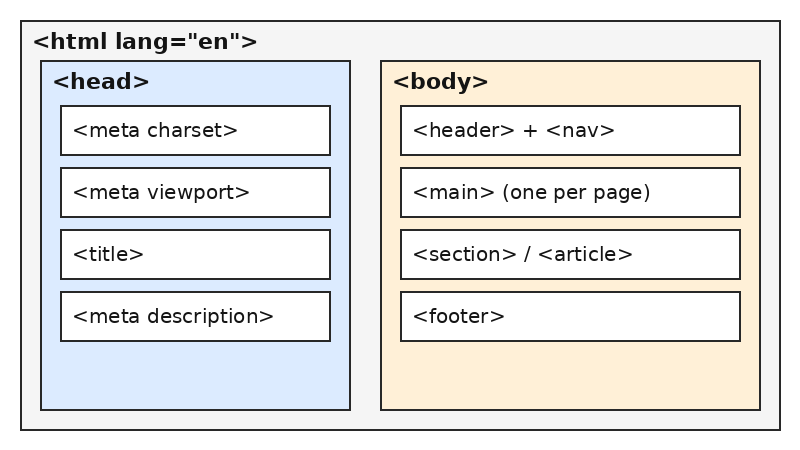

Short notes on what I am learning about building for the web.
Why Semantic HTML Matters
Published on
Semantic HTML means choosing elements for what the content is, not for how it looks. A navigation menu belongs in nav, the main content in main, and a title in a heading.

Figure 1: The basic structure of an HTML page, with metadata in the head and landmarks in the body.
Why it matters: screen readers use these landmarks to jump around a page, search engines use headings to understand it, and browsers give links and forms keyboard support for free.
A relative path describes where a file is compared with the page that links to it. In this website, the form page lives in a child folder called pages, so it needs ../ to go back up to the parent folder:
<a href="../index.html">Home</a>
From a top-level page, the link into the child folder steps down instead:
<a href="pages/application.html">Start a Project</a>